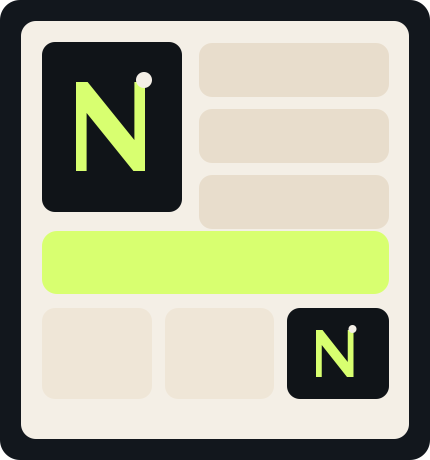

Une image utile
Pas un site décoratif. Un site qui ordonne la perception, l’offre et la confiance.
Le site part des informations réellement disponibles: Bogdan Vlad, une sensibilité entrepreneuriale, un contexte européen et une envie claire d’offrir des services à haute valeur.

J’ai orienté la narration autour d’un fondateur qui veut proposer une offre complète: agents IA, web design, identité visuelle et community management. Le résultat vise un positionnement premium, moderne et très exécutable.
Pas un site décoratif. Un site qui ordonne la perception, l’offre et la confiance.
Le branding, le social et les agents doivent soutenir le même mouvement commercial.
Moins de dispersion, plus de cohérence. Une même vision du premier écran au dernier CTA.